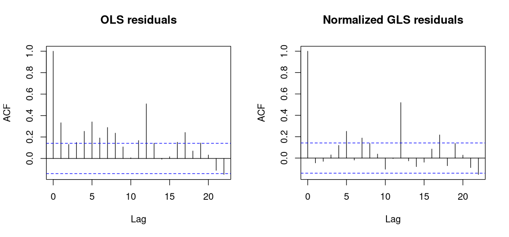

Lab: Interrupted Time Series Foundations With Seatbelts#
Use the R kernel. Keep the supplied data/ folder beside this notebook. Run cells in order after installing the documented R environment. Data loading is entirely local.
How To Use This Page#
This is the first interrupted time-series lab. The guided core is designed for a 45–60 minute workshop; the AR(1) section is an optional extension.
Work from the intervention date and outcome definition before looking at coefficients.
Compare a pre/post summary with a model that preserves the trajectory.
Keep level and trend changes separate.
Interpret log-scale estimates as percentage changes at named horizons.
The lab uses Seatbelts, which is included with R. It contains monthly road-casualty series for Great Britain from January 1969 through December 1984, so no external data download is required.
Training Goal#
By the end of the core lab, you should be able to:
turn a monthly
tsobject into an analysis data frame;code an interruption and post-intervention time correctly;
fit and interpret a seasonal segmented regression;
estimate effects at policy-relevant horizons; and
describe why the estimated break is not automatically causal.
Step 1: Load And Describe The Data#
The primary outcome is front: front-seat passengers killed or seriously injured each month. This is a count, not a fatality-only measure and not a rate. Compulsory front-seat belt wearing began on 31 January 1983, so the supplied monthly law indicator first equals one in February 1983 (Harvey and Durbin 1986; House of Commons Library 2012).
options(repr.plot.width = 8, repr.plot.height = 4.8)
data_helpers <- c("data/load-data.R", "../data/load-data.R", "docs/labs/data/load-data.R")
data_helpers <- data_helpers[file.exists(data_helpers)]
if (!length(data_helpers)) stop("Extract the complete lab ZIP, including its data folder, before running.")
source(data_helpers[[1]])
options(repr.plot.width = 8, repr.plot.height = 4.8)
required_packages <- c("ggplot2", "nlme")
missing_packages <- required_packages[!vapply(
required_packages,
requireNamespace,
logical(1),
quietly = TRUE
)]
if (length(missing_packages) > 0) {
stop("Install the documented R environment first; missing: ", paste(missing_packages, collapse=", "), call.=FALSE)
}
invisible(lapply(required_packages, library, character.only = TRUE))
Seatbelts <- qed_data("Seatbelts")
seatbelts <- as.data.frame(Seatbelts)
seatbelts$time <- seq_len(nrow(seatbelts))
seatbelts$date <- seq(
as.Date("1969-01-01"),
by = "month",
length.out = nrow(seatbelts)
)
seatbelts$post_time <- ifelse(
seatbelts$law == 1,
seatbelts$time - min(seatbelts$time[seatbelts$law == 1]),
0
)
seatbelts$season_sin <- sin(2 * pi * seatbelts$time / 12)
seatbelts$season_cos <- cos(2 * pi * seatbelts$time / 12)
intervention_date <- min(seatbelts$date[seatbelts$law == 1])
data.frame(
observations = nrow(seatbelts),
first_month = min(seatbelts$date),
last_month = max(seatbelts$date),
first_law_month = intervention_date,
pre_law_months = sum(seatbelts$law == 0),
post_law_months = sum(seatbelts$law == 1)
)
stopifnot(
nrow(seatbelts) == 192L,
intervention_date == as.Date("1983-02-01"),
seatbelts$post_time[seatbelts$date == intervention_date] == 0,
all(diff(seatbelts$date) > 0),
all(seatbelts$front > 0)
)
| observations | first_month | last_month | first_law_month | pre_law_months | post_law_months |
|---|---|---|---|---|---|
| <int> | <date> | <date> | <date> | <int> | <int> |
| 192 | 1969-01-01 | 1984-12-01 | 1983-02-01 | 169 | 23 |
Checkpoint: why is February, rather than January, the first treated monthly observation?
Step 2: Plot The Series Before Modelling#
options(repr.plot.width = 10, repr.plot.height = 4.8)
ggplot(seatbelts, aes(date, front)) +
geom_line(linewidth = 0.6, colour = "#24527a") +
geom_vline(
xintercept = intervention_date,
linetype = "dashed",
colour = "#a23b3b"
) +
annotate(
"text",
x = intervention_date,
y = max(seatbelts$front),
label = "Law in effect",
hjust = -0.08,
vjust = 1.2,
colour = "#a23b3b"
) +
labs(
x = NULL,
y = "Front-seat passengers killed or seriously injured",
title = "Great Britain road casualties before and after the seatbelt law"
) +
theme_minimal(base_size = 12)
{kind=link}
Before fitting a model, record what the graph suggests about:
long-run trend;
annual seasonality;
the apparent change around February 1983; and
the short, 23-month post-law period.
Step 3: Show What A Pre/Post Comparison Discards#
options(repr.plot.width = 8, repr.plot.height = 4.8)
prepost_summary <- aggregate(
front ~ law,
data = seatbelts,
FUN = function(x) c(mean = mean(x), sd = sd(x), months = length(x))
)
prepost_table <- data.frame(
period = c("Before law", "Law in effect"),
mean_front_casualties = round(prepost_summary$front[, "mean"], 1),
sd_front_casualties = round(prepost_summary$front[, "sd"], 1),
months = prepost_summary$front[, "months"]
)
prepost_table
| period | mean_front_casualties | sd_front_casualties | months |
|---|---|---|---|
| <chr> | <dbl> | <dbl> | <dbl> |
| Before law | 873.5 | 151.5 | 169 |
| Law in effect | 571.0 | 81.3 | 23 |
The averages mix different calendar months and ignore the pre-law trend. They also compare 169 pre-law observations with only 23 post-law observations. This is a useful description, but it is not the ITS counterfactual.
Step 4: Fit A Transparent Segmented Regression#
The model uses a log outcome so intervention coefficients can be converted into proportional changes. A sine/cosine pair represents annual seasonality without estimating eleven separate month coefficients.
options(repr.plot.width = 8, repr.plot.height = 4.8)
its_formula <- log(front) ~
time + law + post_time + season_sin + season_cos
ols_fit <- lm(its_formula, data = seatbelts)
ols_terms <- coef(summary(ols_fit))[c("law", "post_time"), ]
ols_results <- data.frame(
term = c("Immediate log change", "Monthly log-trend change"),
estimate = ols_terms[, "Estimate"],
standard_error = ols_terms[, "Std. Error"],
p_value = ols_terms[, "Pr(>|t|)"],
row.names = NULL
)
ols_results
immediate_percent <- 100 * (exp(coef(ols_fit)[["law"]]) - 1)
immediate_percent
stopifnot(
all(is.finite(coef(ols_fit))),
immediate_percent > -100,
length(residuals(ols_fit)) == nrow(seatbelts)
)
| term | estimate | standard_error | p_value |
|---|---|---|---|
| <chr> | <dbl> | <dbl> | <dbl> |
| Immediate log change | -0.343235792 | 0.052196021 | 4.749276e-10 |
| Monthly log-trend change | 0.009496057 | 0.003804953 | 1.344079e-02 |
Interpret the two intervention terms separately:
lawis the estimated immediate change in February 1983 relative to the projected no-law path;post_timeis the change in monthly trend after that first law month.
Neither coefficient alone describes every post-law month.
Step 5: Estimate Effects At Named Horizons#
At horizon \(`h`\), the log-scale contrast is
Its standard error must include the covariance between the two coefficients.
options(repr.plot.width = 8, repr.plot.height = 4.8)
effect_at_horizon <- function(model, horizon) {
weights <- c(law = 1, post_time = horizon)
coefficients <- coef(model)[names(weights)]
covariance <- vcov(model)[names(weights), names(weights)]
log_effect <- sum(weights * coefficients)
standard_error <- sqrt(drop(t(weights) %*% covariance %*% weights))
data.frame(
horizon_months = horizon,
percent_change = 100 * (exp(log_effect) - 1),
lower_95 = 100 * (exp(log_effect - 1.96 * standard_error) - 1),
upper_95 = 100 * (exp(log_effect + 1.96 * standard_error) - 1)
)
}
horizon_results <- do.call(
rbind,
lapply(c(0, 6, 12), function(h) effect_at_horizon(ols_fit, h))
)
round(horizon_results, 1)
stopifnot(
nrow(horizon_results) == 3L,
all(is.finite(as.matrix(horizon_results)))
)
| horizon_months | percent_change | lower_95 | upper_95 |
|---|---|---|---|
| <dbl> | <dbl> | <dbl> | <dbl> |
| 0 | -29.1 | -36.0 | -21.4 |
| 6 | -24.9 | -30.1 | -19.2 |
| 12 | -20.5 | -25.4 | -15.3 |
Checkpoint: why should the 12-month result usually be less certain than the immediate result?
Step 6: Plot The Estimated No-Law Path#
options(repr.plot.width = 10, repr.plot.height = 5.2)
seatbelts$fitted_observed <- exp(predict(ols_fit, newdata = seatbelts))
no_law_data <- seatbelts
no_law_data$law <- 0
no_law_data$post_time <- 0
seatbelts$fitted_no_law <- exp(predict(ols_fit, newdata = no_law_data))
ggplot(seatbelts, aes(date)) +
geom_line(aes(y = front, colour = "Observed"), linewidth = 0.55) +
geom_line(aes(y = fitted_observed, colour = "Fitted with law"), linewidth = 0.75) +
geom_line(
aes(y = fitted_no_law, colour = "Projected no-law path"),
linewidth = 0.75,
linetype = "dashed"
) +
geom_vline(xintercept = intervention_date, linetype = "dotted") +
scale_colour_manual(values = c(
"Observed" = "#303030",
"Fitted with law" = "#24527a",
"Projected no-law path" = "#bf6b21"
)) +
labs(
x = NULL,
y = "Front-seat passengers killed or seriously injured",
colour = NULL
) +
theme_minimal(base_size = 12) +
theme(legend.position = "bottom")
{kind=link}
The no-law line is a model projection. The gap is estimated rather than observed, and a coincident event could generate the same pattern.
Optional Extension: Account For Serial Dependence#
The core OLS model makes the parameterization transparent. Monthly residuals may still be correlated, so compare it with generalized least squares using AR(1) errors.
options(repr.plot.width = 9, repr.plot.height = 4.2)
gls_fit <- gls(
its_formula,
data = seatbelts,
correlation = corAR1(form = ~ time),
method = "REML"
)
gls_terms <- summary(gls_fit)$tTable[c("law", "post_time"), ]
model_comparison <- data.frame(
model = rep(c("OLS", "GLS with AR(1) errors"), each = 2),
term = rep(c("Immediate change", "Trend change"), times = 2),
estimate = c(ols_terms[, "Estimate"], gls_terms[, "Value"]),
standard_error = c(ols_terms[, "Std. Error"], gls_terms[, "Std.Error"])
)
model_comparison
par(mfrow = c(1, 2))
acf(residuals(ols_fit), main = "OLS residuals")
acf(residuals(gls_fit, type = "normalized"), main = "Normalized GLS residuals")
par(mfrow = c(1, 1))
stopifnot(
all(is.finite(gls_terms)),
abs(coef(gls_fit$modelStruct$corStruct, unconstrained = FALSE)) < 1
)
| model | term | estimate | standard_error |
|---|---|---|---|
| <chr> | <chr> | <dbl> | <dbl> |
| OLS | Immediate change | -0.343235792 | 0.052196021 |
| OLS | Trend change | 0.009496057 | 0.003804953 |
| GLS with AR(1) errors | Immediate change | -0.349326361 | 0.071407901 |
| GLS with AR(1) errors | Trend change | 0.010446459 | 0.005227719 |
{kind=link}

AR(1) errors address residual dependence. They do not remove a concurrent policy, repair a changing outcome definition, or make a weak comparison series credible.
Final Design Judgment#
Write three sentences:
Define the outcome, intervention month, and post-law observation window.
Describe the estimated immediate and 12-month changes without relying on a p-value alone.
State the most important reason the estimated break may not equal the causal effect of compulsory seatbelt wearing.
Next Step#
Continue to Seatbelt Law Design and Robustness to compare outcomes, candidate controls, and a compact prespecified sensitivity set.
Harvey, Andrew C., and James Durbin. 1986. “The Effects of Seat Belt Legislation on British Road Casualties: A Case Study in Structural Time Series Modelling.” Journal of the Royal Statistical Society: Series A (General) 149 (3): 187–227. https://doi.org/10.2307/2981553.
House of Commons Library. 2012. “Motor Vehicles: Seat Belts and Child Restraints.” House of Commons Library Standard Note SN/BT/43. https://researchbriefings.files.parliament.uk/documents/SN00043/SN00043.pdf.